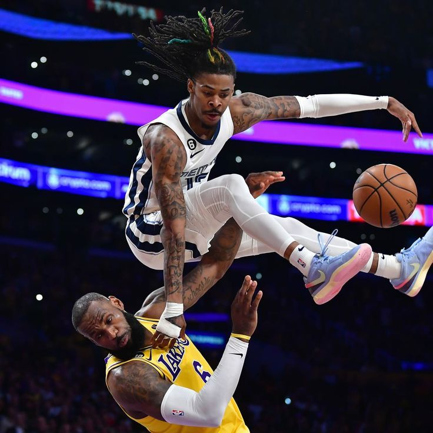

La NBA, entre parquet et podium
Avant même de toucher un ballon, les joueurs défilent. Le couloir qui mène au terrain est devenu l'un des plus grands podiums du monde. Comment le basket américain est-il devenu autant une affaire de style qu'une affaire de sport ?

Le tunnel, nouveau défilé
Il y a quelques années, personne ne regardait les joueurs arriver au stade. Aujourd'hui, c'est devenu un spectacle à part entière. Chaque entrée est photographiée, analysée, commentée, comme une sortie de défilé. Le couloir d'accès est devenu le vrai tapis rouge du sport.
Les joueurs l'ont compris et en jouent. Ils préparent leurs tenues, collaborent avec des stylistes, soignent chaque apparition. Arriver au match est devenu une déclaration de style, un moyen d'exister au-delà du terrain, de montrer qui l'on est.
Ce phénomène a transformé le statut des athlètes. Ils ne sont plus seulement jugés sur leurs performances sportives, mais aussi sur leur allure, leur goût, leur personnalité. Le sport et la mode se sont mélangés au point de devenir indissociables.
Des athlètes devenus icônes
Les stars de la NBA ne sont plus de simples sportifs : ce sont des icônes culturelles, des entrepreneurs, des influenceurs, parfois de véritables marques à eux seuls. Leur influence dépasse de loin le parquet.
Ils lancent des entreprises, investissent, s'engagent, dictent des tendances. Un joueur peut peser sur la mode, la musique, la politique, la société. Le basketteur moderne est un personnage total, dont le sport n'est qu'une facette parmi d'autres.
Une conquête mondiale
Né aux États-Unis, le basket est devenu un langage universel. La NBA compte aujourd'hui des fans sur tous les continents, des joueurs venus du monde entier, une audience véritablement globale.
Le basket est devenu l'un des plus puissants vecteurs de la culture américaine dans le monde. Par lui se diffusent une esthétique, une musique, une manière d'être. Il incarne une forme de soft power redoutablement efficace, séduisant des millions de jeunes bien au-delà des frontières.
Cette mondialisation transforme le sport lui-même. Les talents viennent désormais de partout, apportant leurs styles, leurs cultures, leurs histoires. La NBA n'est plus seulement américaine : elle est devenue le reflet d'un monde entier qui joue au même jeu.
La voix des joueurs
Fait plus rare dans le sport, les stars de la NBA n'hésitent pas à prendre la parole sur les grands sujets de société. Ils s'engagent, dénoncent, défendent des causes, utilisent leur immense notoriété. Le terrain est devenu aussi une tribune.
Cette prise de parole donne au basket une dimension supplémentaire. Les joueurs ne sont plus des divertisseurs silencieux : ce sont des acteurs de leur époque, conscients de leur influence et prêts à s'en servir. Le sport devient un espace d'engagement.
Le sport total
Au fond, la NBA a inventé un modèle que le monde entier observe et copie : celui d'un sport qui est aussi une culture, un divertissement, une mode, un espace d'engagement. Un spectacle complet qui dépasse de loin le simple résultat d'un match.
Elle a compris avant les autres que le sport moderne ne se joue plus seulement sur le terrain. Il se joue dans les tunnels, sur les réseaux, dans la culture, dans la société. Et c'est en embrassant toutes ces dimensions à la fois que le basket est devenu l'un des plus grands phénomènes culturels de notre temps.
Le match ne commence plus sur le terrain. Il commence dès que les joueurs entrent dans le tunnel.